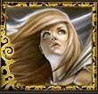

Guildes
Songe
Jëwell
Age : 26Sexe : Femme
Race : Humain
Faction : Alliance
Formation : Voleur
Plus d'infos sur Jëwell >>>
Lire les 11 récits de Jëwell >>>
Kerla
 Age : 19
Age : 19
Sexe : Femme
Race : Humain
Faction : Alliance
Formation : Démoniste
Description : Née à Hearthglen, à vu son père se relever en tant que serviteur du Fléau. Fuyant par la mer cet enfer, celle-ci mourut en chemin.
Recueillit par son oncle, seul survivant de la famille, elle grandit dans les reliefs qui séparent la vallée de Strangleronce et le Westfall, apprenant auprès de son tuteur les arts noirs.
La jugeant suffisament aguerrie, il l'envoya à ses dix huit ans à StormWind apprendre plus encore. Croisant rapidement Magdaléna, elle devint son élève.
Sa vie l'amena à être corsaire sur la Maraude, fier équipage au service de Stormwind sous la houlettes de Sonate Sumbre.
Plus d'infos sur Kerla >>>
Lazuli
Age : inconnuSexe : Femme
Race : Elfe
Faction : Alliance
Formation : Voleur
Description : Ce qu'elle est :
Pour le curieux, Lazuli est une Kaldorei assez grande, à la silhouette élancée et athlétique tantôt enfermée dans une combinaison noire, tantôt mise en valeur par un uniforme élégant ou une robe raffinée. Le mouvement grâcieux de sa démarche féline trahit parfois une habileté hors du commun, celle dont peuvent par exemple faire preuve les anciennes Sentinelles de Tyrande Whisperwind.
Sa peau étonnament pâle et ses longs cheveux aux teintes nacrées dégage une froideur certaine à côté de ses soeurs aux teintes plus chaudes et aux chevelures plus colorées. Ce physique glacial s'aligne parfaitement avec le comportement qu'elle adopte d'une manière générale. Le visage est inexpressif à quelques exceptions près, comme une mince courbure du coin des lèvres, un subtil plissement des paupières. La voix est neutre, la plupart du temps, et plutôt grave pour une femelle de son espèce.
Cruellement, il semblerait qu'elle n'ait aucune empathie avec les animaux, contrairement à ses frères et soeurs souvent très proches de la nature. Par conséquent, l'elfe a dû se procurer une monture particulière : une femelle sabrenuit qu'elle invoque et révoque à l'aide d'un pierre couleur sang. Cette bête semble être la seule qui lui obéit au doigt et à l'oeil, résultat d'un lien étroit qu'elle a fait tisser entre sa personne et l'animal magique.
Ce qu'on dit :
L'histoire exacte de Lazuli reste inconnue au sens commun. De douteux individus peuvent véhiculer des rumeurs à la véracité discutable.
L'elfe serait particulièrement agée, et une fois l'unification de la Nouvelle Alliance scellée, elle aurait passé des journées entières dans les bibliothèques des terres de l'est afin d'assouvir une impressionnante soif de connaissances. Toujours solitaire, elle aurait tout simplement cessé au bout de deux années d'intensive lecture.
Chacun sait que le rythme des Kaldorei est très différent de la cadence rapide des humains et autres races des terres de l'est. Lorsque l'on a l'éternité devant soi, il n'est pas habituel de ressentir un besoin irrépressible de se dépêcher, de prendre des décisions à la volée, de vivre au jour le jour... Lazuli aurait eu beaucoup de mal (et manifestement elle ne serait pas au bout de ses peines) à prendre en route le mode de vie accéléré des humains...
Nul ne sait d'où vient cette curieuse distance qu'elle semble vouloir installer entre elle et le reste du monde. Il semblerait possible de la traverser afin de rentrer dans son monde, puisque d'aucuns affirment l'avoir vue témoigner des émotions diverses face à certains privilégiés.
Plus d'infos sur Lazuli >>>
Lire les 7 récits de Lazuli >>>
Serraghost
Age : 31Sexe : Homme
Race : Humain
Faction : Alliance
Formation : Guerrier
Description : La Légion Ardente, Kanelael Mistwinter la connaissait bien. Il lavait combattue sur tous les fronts, et profitait aujourdhui de sa paisible retraite. Il profitait du calme et de la sérénité de ses journées, non loin de Stormwind. Ce repos bienfaiteur contrastait avec ce malstrom de cris et de hurlements qui résonnait dans son crâne. Il revenait épuisé, blessé et affaiblit, mais paradoxalement, il revenait heureux. Heureux d'avoir pu sauver l'enfant qu'il tenait dans son bras valide. Le voir guérissait tous ses tourments et lui rendait un sourire quil avait oublié depuis bien longtemps.
De retour dans ses terres, près du Bois de la Pénombre, il commença l'éducation de ce fils, qu'il nomma Serraghost Angelfury. Ce nom, il lavait emprunté à son meilleur ami mort sous ses yeux, peu avant quil se retire de sa vie de chevalier. Longtemps il hésita à donner à lui donner son propre nom mais dans un soupir, il glissa :
« Un bel enfant comme toi ne doit pas porter le nom d'un guerrier qui n'a pas su protéger son meilleur ami, son frère »
Il navait pas dexpérience dans le domaine, mais il se jura déduquer Serraghost du mieux possible. Il avait ramené suffisamment d'objets de ses voyages : leur vente lui assurerait une fin de vie paisible, à lui et à son fils.
Les premières années, il fit preuve de la plus grande patience qui soit : il l'accompagna dans toutes ses avancées, lui appris tout ce quil pouvait, lui conta ses aventures... Serraghost ne manqua de rien. Il grandit, eu peu d'amis, excepté une certaine Linariel, une humaine timide à lapparence fragile, qui semblait lui plaire. Il passait beaucoup de temps avec elle, mais ne voulut jamais avouer quoi que ce soit à ce propos.
Le jour où Serraghost devint assez fort pour que Kanelael décide de le mettre à l'épreuve arriva. Son fils n'aimait pas particulièrement la violence, mais n'y renonçait pas non plus lorsqu'il fallait relever un défi. Ces traits de caractère, il les connaissait. Il savait trop bien ce que cela représentait. Alors qu'il rentrait d'une chasse au loup, Kanelael décida de lui parler...
[Suite]
Plus d'infos sur Serraghost >>>